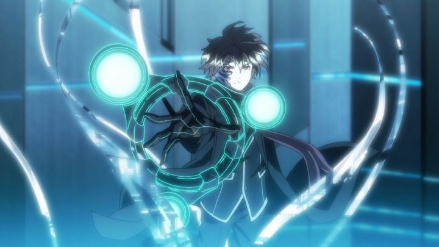

Ah, "Guilty Crown." I remember when I first heard of it: American distributor Funimation had posted on their Youtube channel a subtitled preview of the anime before it broadcast in Japan, strongly suggesting it already had the American simulcast rights (something that would grow to be an important trend circa 2010 and beyond). The promotional video made my jaw job: it appeared to feature a story that was some mix of "Code Geass" and "Evangelion," but with higher production values than any show I had seen at the time, great visuals and animation, and absolutely beautiful vocal music. It became the show I was most excited for, enough so to be the first show I would try to follow week-to-week as the episodes were posted online in 2011.... and I quit watching after the first five or six episodes. There was something about the character writing that felt frustrating; I couldn't fully understand their motivations, and the show tried its best to make me NOT like them. Generally, fans were disappointed with the show, and even Funimation seemed aware of the response, not saying anything of a home video release until about two years later, at which point they tried to rely on the animation, music, promise of an engaging story, and a special edition with artbooks to sell the show, hoping customers had either not yet seen or had forgotten how the show was received. It worked on me, and I took the opportunity to sit down and watch the show to the end with the new English dub. The story follows a senior high school student named Shu in an alternate future dystopia. He's a generally complacent protagonist who spends his time watching music videos online sung by his favorite star. After seeing said vocalist running from trouble, Shu finds himself thrown with a rebellion force named "Funeral Parlor" fighting against the corrupt military forces of Japan, as well as trying to uncover the mystery behind a virus that crystalizes people's skin until it breaks into dust. Also, Shu is kept around this force because he accidently triggered "the power of the king" that allows him to take out "voids" from people's hearts, utilizing them as weapons unique to each individual. This power wasn't meant for him, but after some training, it becomes helpful as he fights to protect himself and those around him.The story changes quite dramatically by the second half of the series, explaining why fans would be left confused and disappointed. In fact, one could probably split the series further into at least three distinct arcs. The first half wasn't unlike other Shonen sci-fi anime, wherin Shu was just trying to fit in with the rebellion group and learning how to use his new power. But hell breaks loose when the virus spreads out of control, and the show becomes more like "Lord of the Flies" or "Battle Royale," as Shu and other students try to survive in their school, deemed a shelter to the outbreak. Later, we finally reach the climax where we learn about exactly what is going on, and Shu can proceed to save the world in a biblical-level battle. Never mind that characters die, then come back again, switch sides, die again, come back again, and contribute to other plot nonsensical plot twists. It's a lot of story, and the changes in tone and theme are more than a little chaotic: it's as if entirely different writers and directors were in charge of separate chunks of the story.  And yet, I was entertained and engaged by the second half. Yes, certain choices characters make seem down-right stupid during the school-survival arc, but they lead to the end with purpose. Despite borrowing liberally from anime like "Code Geass," "Evangelion," "Gurren Lagann" and others, there is enough material to make the combination feel original. But overall, those shows were better at what they did than "Guilty Crown." It's a shame vocalist and rebellion member Inori is handled so poorly, while other characters and what happens to them range from entertaining to ridiculous. The English dub does a lot to eliviate some of these problems, making the experience a bit more enjoyable. The character design and background art is arguably the prettiest Production I.G. has ever produced, using great color-scheme choices to create the futuristic world. The music is good, especially the vocal insert songs and opening theme, provided by J-Pop group "Supercell." It's a bit overrated, but still better and more memorable than music in most other anime. Overall, I disagree with the viewpoint that the first half of the series was the best: I found it got much more exciting in the second half when the show went off the rails. A few writing improvements and some extra episodes to expand the plot would have done a lot, but I couldn't help but get excited by the time the show reaches its dramatic conclusion. Retrying this as a trilogy film series could have led to one of the better anime accomplishments of the decade, but the studio seemed discouraged by what came out of this first atttempt. Oh well. As for you, yes, "Guilty Crown" is a bit of a frustrating mess, but is still entertaining enough (if you stick around long enough) to go along for the ride. A guilty pleasure for fans of sci-fi fantasy.
- "Ani" More reviews can be found at : https://2danicritic.github.io/ Previous review: review_Ground_Control_to_Psychoelectric_Girl Next review: review_Gun_X_Sword